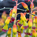
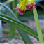
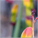
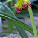
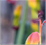
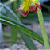
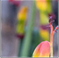

 





Lachenalia Quadricolour
$10.00
Quantity:
1
Description
Lachenalia Quadricolour (Lachenalia aloides var quadricoloura), also known as ‘Soldier Boys’, is a stunning, low-maintenance plant that adds vibrant color and elegance to any space. With its unique gradient blooms in shades of red, orange, yellow with dark tips, this compact beauty is perfect for indoor or outdoor settings. Thriving in winter and spring, it’s a seasonal showstopper that brightens up your home or garden with minimal care. Rare and captivating, the Lachenalia quadricolor is the perfect way to elevate your plant collection or gift something truly special. Don’t miss out on this botanical gem!